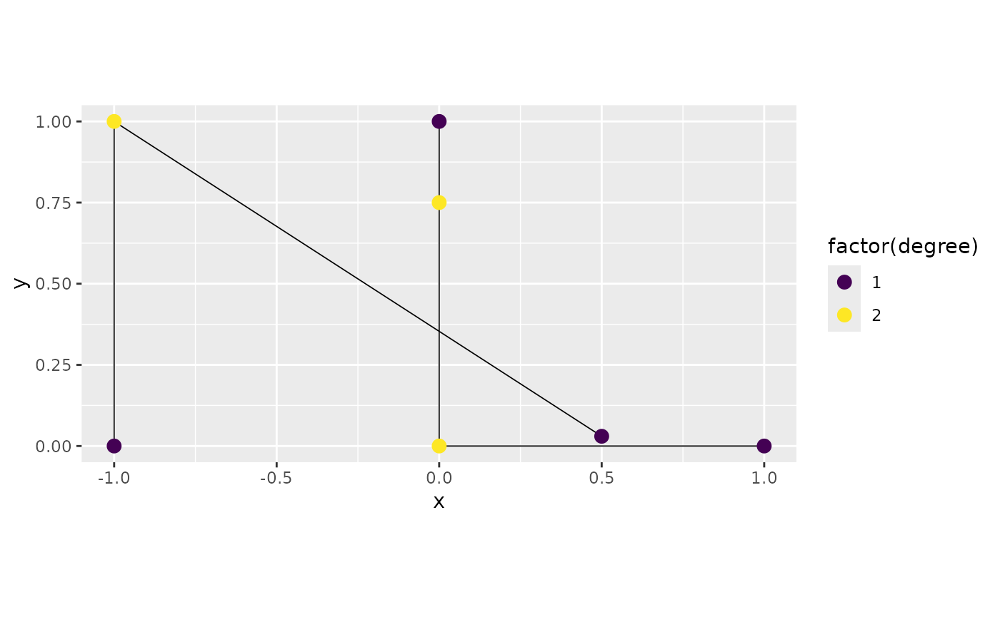
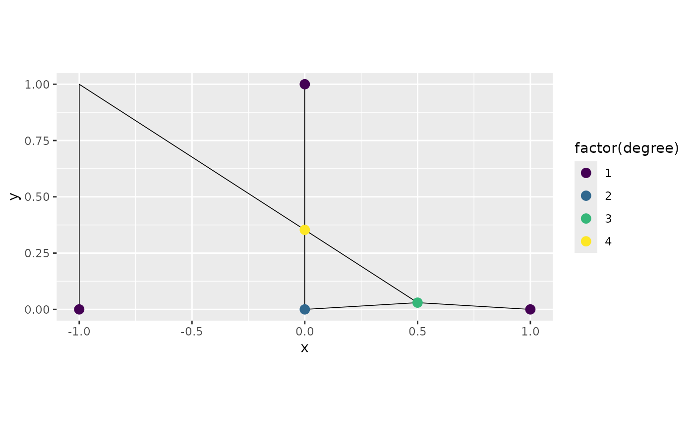

Working with metric graphs
David Bolin, Alexandre B. Simas, and Jonas Wallin
2023-05-09
Source:vignettes/metric_graph.Rmd
metric_graph.RmdIntroduction
Networks such as street or river networks are examples of metric graphs. A compact metric graph \(\Gamma\) consists of a set of finitely many vertices \(\mathcal{V}=\{v_i\}\) and a finite set \(\mathcal{E}=\{e_j\}\) of edges connecting the vertices. Each edge \(e\) is a curve of finite length \(l_e\) that connects two vertices. These curves are parameterized by arc length and a location \(s\in \Gamma\) is a position on an edge, and can thus be represented as a touple \((e,t)\) where \(t\in[0,l_e]\). Compared to regular graphs, where one typically defines functions on the vertices, we are for metric graphs interested in function that are defined on both the vertices and the edges.
In this vignette we will introduce the metric_graph
class of the MetricGraph package. This class provides a
user friendly representation of metric graphs, and we will show how to
use the class to construct and visualize metric graphs, add data to
them, and work with functions defined on the graphs.
For details about Gaussian processes and inference on metric graphs, we refer to the Vignettes
Constructing metric graphs
Basic constructions and properties
A metric graph can be constructed in two ways. The first is to
specify all edges in the graph as a SpatialLines object
using the sp package. To illustrate this, we first load the
sp package
and construct the following lines
line1 <- Line(rbind(c(0,0),c(1,0)))
line2 <- Line(rbind(c(0,0),c(0,1)))
line3 <- Line(rbind(c(0,1),c(-1,1)))
theta <- seq(from=pi,to=3*pi/2,length.out = 50)
line4 <- Line(cbind(sin(theta),1+ cos(theta)))
Lines = sp::SpatialLines(list(Lines(list(line1),ID="1"),
Lines(list(line2),ID="2"),
Lines(list(line3),ID="3"),
Lines(list(line4),ID="4")))We can now create the graph based on the Lines object as
follows
graph <- metric_graph$new(lines = Lines)
graph$plot()The plot function that was used to create the plot above has various
parameters to set the sizes and colors of the vertices and edges, and it
has a plotly argument to visualize the graph in 3D. For
this to work, the plotly library must be installed.
graph$plot(plotly = TRUE, vertex_size = 5, vertex_color = "blue",
edge_color = "red", edge_width = 2)It is also important to know that the 2d version of the
plot() method returns a ggplot2 object and can
be modified as such. For instance:
p <- graph$plot()
p + ggplot2::labs(title = "Metric graph",
x = "long", y = "lat")Similarly, the 3d version of the plot()
method returns a plotly object that can also be modified.
For instance:
p <- graph$plot(plotly = TRUE)
p <- plotly::layout(p, title = "Metric graph",
scene = list(xaxis=
list(title = "Long"),yaxis=list(title = "Lat")))
pWe can now obtain various properties of the graph: The vertex matrix, which specifies the Euclidian coordinates of the vertices is
graph$V## [,1] [,2]
## [1,] 0 0
## [2,] 1 0
## [3,] 0 1
## [4,] -1 1and the edge matrix that specified the edges of the graph (i.e., which vertices that are connected by lines) is
graph$E## [,1] [,2]
## [1,] 1 2
## [2,] 1 3
## [3,] 3 4
## [4,] 1 4To obtain the geodesic (shortest path) distance between the vertices,
we can use the function compute_geodist:
graph$compute_geodist()
graph$geo_dist## $`__vertices`
## [,1] [,2] [,3] [,4]
## [1,] 0.000000 1.000000 1 1.570729
## [2,] 1.000000 0.000000 2 2.570729
## [3,] 1.000000 2.000000 0 1.000000
## [4,] 1.570729 2.570729 1 0.000000The second option it to construct the graph using two matrices
V and E that specify the locations (in
Euclidean space) of the vertices and the edges. In this case, it is
assumed that the graph only has straight lines:
V <- rbind(c(0, 0), c(1, 0), c(0, 1), c(-1, 1))
E <- rbind(c(1, 2), c(1, 3), c(3, 4), c(4, 1))
graph2 <- metric_graph$new(V = V, E = E)
graph2$plot()
Tolerances for the merging vertices and lines
The constructor of the graph has one argument tolerance
which is used for connecting lines that are close in Euclidean space.
Specifically, the tolerance argument is given as a list
with three elements:
-
vertex_vertexvertices that are closer than this number are merged (the default value is1e-7) -
vertex_lineif a vertex at the end of one line is closer than this number to another line, this vertex is connected to that line (the default value is1e-7) -
line_lineif two lines at some point are closer than this number, a new vertex is added at that point and the two lines are connected (the default value is0which means that the option is not used)
These options are often needed when constructing graphs based on real data, for example from OpenStreetMap as we will see later. To illustrate these options, suppose that we want to construct a graph from the following three lines:
line1 <- Line(rbind(c(0,0),c(1,0)))
line2 <- Line(rbind(c(0,0.03),c(0,1)))
line3 <- Line(rbind(c(-1,1),c(0.5,0.03)))
lines = SpatialLines(list(Lines(list(line1),ID="1"),
Lines(list(line2),ID="2"),
Lines(list(line3),ID="3")))
graph3 <- metric_graph$new(lines = lines)## The graph is disconnected. You can use the function 'graph_components' to obtain the different connected components.
graph3$plot(degree = TRUE)
print(graph3$nV)## [1] 6
We added the option degree=TRUE to the plot here to
visualize the degrees of each vertex. As expected, one sees that all
vertices have degree 1, and none of the three lines are connected. If
these are streets in a street network, one might suspect that the two
vertices at \((0,0)\) and \((0,0.03)\) really should be the same vertex
so that the two lines are connected. This can be adjusted by increasing
the vertex_vertex tolerance:
graph3 <- metric_graph$new(lines = lines, tolerance = list(vertex_vertex = 0.05))## The graph is disconnected. You can use the function 'graph_components' to obtain the different connected components.
graph3$plot(degree = TRUE)One might also want to add the vertex at \((0.5, 0.03)\) as a vertex on the first
line, so that the two lines there are connected. This can be done by
adjusting the vertex_line tolerance:
graph3 <- metric_graph$new(lines = lines, tolerance = list(vertex_vertex = 0.05,
vertex_line = 0.1))
graph3$plot(degree = TRUE)
We can see that the vertex at \((0.5,0)\) was indeed connected with the
edge from \((0,0)\) to \((1,0)\) and that vertex now has degree 3
since it is connected with three edges. One can also note that the
lines object that was used to create the graph is modified
internally in the metric_graph object so that the
connections are visualized correctly in the sense that all edges are
actually shown as connected lines. This modification might take some
time for large graphs with many lines, because of this, the
lines object is by default modified if the graph has less
than 100 lines, and otherwise it is not modified. Whether or not it
should be modified can be set via the argument
adjust_lines:
graph3 <- metric_graph$new(lines = lines, tolerance = list(vertex_vertex = 0.05,
vertex_line = 0.1),
adjust_lines = FALSE)
graph3$plot(degree = TRUE)If the lines object is not modified, then the graph is
correct but the plot might not show the graph as connected even though
it is. Finally, to add a vertex at the intersection between
line2 and line3 we can adjust the
line_line tolerance:
graph3 <- metric_graph$new(lines = lines, tolerance = list(vertex_vertex = 0.2,
vertex_line = 0.1,
line_line = 0.001))
graph3$plot(degree = TRUE)Now, the structure of the metric graph does not change if we add or
remove vertices of degree 2. Because of this,one might want to remove
vertices of degree 2 since this can reduce computational costs. This can
be done by setting the remove_deg2 argument while creating
the graph:
graph3 <- metric_graph$new(lines = lines, tolerance = list(vertex_vertex = 0.2,
vertex_line = 0.1,
line_line = 0.001),
remove_deg2 = TRUE)
graph3$plot(degree = TRUE)
Understanding coordinates on graphs
The locations of the vertices are specified in Euclidean coordinates.
However, when specifying a position on the graph, it is not practical to
work with Euclidean coordinates since not all locations in Euclidean
space are locations on the graph. It is instead better to specify a
location on the graph by the touple \((i,
t)\), where \(i\) denotes the
number of the edge and \(t\) is the
location on the edge. The location \(t\) can either be specified as the distance
from the start of the edge (and then takes values between 0 and the
length of the edge) or as the normalized distance from the start of the
edge (and then takes values between 0 and 1). The function
coordinates can be used to convert between coordinates in
Euclidean space and locations on the graph. For example the location at
distance 0.2 from the start of the second edge is:
## [,1] [,2]
## [1,] 0 0.2In this case, since the edge has length 1, the location of the point at normalized distance 0.2 from the start of the edge is the same:
## [,1] [,2]
## [1,] 0 0.2The function can also be used to find the closest location on the graph for a location in Euclidean space:
## [,1] [,2]
## [1,] 1 0In this case, the normalized argument decides whether
the returned value should be given in normalized distance or not.
Methods for working with real data
To illustrate the useage of metric_graph on some real
data, we use the osmdata package to download data from
OpenStreetMap. In the following code, we extract highways in the city of
Copenhagen:
## Data (c) OpenStreetMap contributors, ODbL 1.0. https://www.openstreetmap.org/copyright
set_overpass_url("https://maps.mail.ru/osm/tools/overpass/api/interpreter")
call <- opq(bbox = c(12.4,55.5,12.65,55.9))
call <- add_osm_feature(call, key = "highway",value=c("motorway", "primary",
"secondary"))
data <- osmdata_sp(call)
graph5 <- metric_graph$new(SpatialLines(data$osm_lines@lines))## The graph is disconnected. You can use the function 'graph_components' to obtain the different connected components.
graph5$plot(vertex_size = 0)There are a few things to note about data like this. The first is that the coordinates are given in Longitude and Latitude. Because of this, the edge lengths are by default given in degrees, which may result in very small numbers:
range(graph5$edge_lengths)## [1] 5.575841e-06 1.115746e-01This may cause numerical instabilities when dealing with random
fields on the graph, and it also makes it difficult to interpret results
(unless one has a good intuition about distances in degrees). To avoid
such problems, it is better to set the longlat argument
when constructing the graph:
graph5 <- metric_graph$new(SpatialLines(data$osm_lines@lines), longlat = TRUE)## The graph is disconnected. You can use the function 'graph_components' to obtain the different connected components.This tells the constructor that the coordinates are given in Longitude and Latitude and that distances should be calculated in km. So if we now look at the edge lengths, they are given in km:
range(graph5$edge_lengths)## [1] 0.000556146 11.209690354The second thing to note is that the constructor gave a warning that
the graph is not connected. This might not be ideal for modeling and we
may want to study the different connected components separately. If this
is not a concern, one can set the argument
check_connected = FALSE while creating the graph. In this
case the check is not done and no warning message is printed. To
construct all connected components, we can create a
graph_components object:
graphs <- graph_components$new(SpatialLines(data$osm_lines@lines), longlat = TRUE)The graph_components class contains a list of
metric_graph objects, one for each connected component. In
this case, we have
graphs$n## [1] 11components in total, and their total edge lengths in km at
graphs$lengths## [1] 179.382202 113.614138 37.816723 10.747573 10.678542 9.410605
## [7] 8.960017 8.722778 4.291516 4.182991 1.903703To plot all of them, we can use the plot command of the
class:
graphs$plot(vertex_size = 0)One reason for having multiple components here might be that we set the tolerance for merging nodes too low. In fact, by looking at the edge lengths we see that we have vertices that are as close as
min(graph5$edge_lengths) * 1000## [1] 0.556146meters. Let us increase the tolerances so that vertices that are at most a distance of 20 meters (0.02km) apart should be merged, and that vertices that are withing 20 meters of other lines should be merged with them:
graphs <- graph_components$new(SpatialLines(data$osm_lines@lines), longlat = TRUE,
tolerance = list(vertex_vertex = 0.02,
vertex_line = 0.02))
graphs$plot(vertex_size = 0)
With this choice, we see that the graph is connected:
graphs$n## [1] 1However, since the adjust_vertices argument by default
is FALSE for this size of graphs, the plot of the graph
might look disconnected in places where vertices have been merged. We
can retrieve the graphas a standard metric_graph object to
work with in further analysis via the get_largest
command:
graph5 <- graphs$get_largest()Adding data to the graph
Given that we have constructed the metric graph, we can now add data to it. As an example, let us consider the first graph again and suppose that we have observations at a distance 0.5 from the start of each edge. One way of specifying this is as follows
obs.loc <- cbind(1:4, rep(0.5, 4))
obs <- c(1,2,3,4)
df_graph <- data.frame(y = obs, edge_number = obs.loc[,1],
distance_on_edge = obs.loc[,2])
graph$add_observations(data = df_graph)
graph$plot(data = "y", data_size = 2)
In certain situations, it might be easier to specify the relative
distances on the edges, so that 0 represents the start and 1 the end of
the edge (instead of the edge length). To do so, we can simply specify
normalized = TRUE when adding the observations. For
example, let us add one more observation at the midpoint of the fourth
edge:
obs.loc <- matrix(c(4, 0.5),1,2)
obs <- c(5)
df_new <- data.frame(y=obs, edge_number = obs.loc[,1],
distance_on_edge = obs.loc[,2])
graph$add_observations(data=df_new, normalized = TRUE)
graph$plot(data = "y")
An alternative method is to specify the observations as spatial points objects, where the locations are given in Euclidean coordinates. In this case the observations are added to the closes location on the graph:
obs.loc <- rbind(c(0.7, 0), c(0, 0.2))
obs <- c(6,7)
points <- SpatialPointsDataFrame(coords = obs.loc,
data = data.frame(y = obs))
graph$add_observations(points)
graph$plot(data = "y")If we want to replace the data in the object, we can use
clear_observations() to remove all current data:
graph$clear_observations()The metric_graph object can hold multiple variables of
data, and one can also specify a group argument that it
useful for specifying that data is grouped, which for example is the
case with data observed at different time points. As an example, let us
add two variables observed at two separate time points:
obs.loc <- cbind(c(1:4, 1:4), c(rep(0.5, 4), rep(0.7, 4)))
df_rep <- data.frame(y = c(1, 2, NA, 3, 4, 6, 5, 7),
x = c(NA, 8, 9, 10, 11, 12, 13, NA),
edge_number = obs.loc[,1],
distance_on_edge = obs.loc[,2],
time = c(rep(1, 4), rep(2, 4)))
graph$add_observations(data = df_rep, group = "time")If NA is given in some variable, this indicates that
this specific variable is not measured at that location and group. We
can now plot the individual variables by specifying their names in the
plot function together with the group number that we want to see. By
default the first group is shown.
graph$plot(data = "y", group = 2)
In some cases, we might want to add the observation locations as vertices in the graph. This can be done as follows:
graph$observation_to_vertex()
graph$plot(data = "x", group = 1)One can note that the command adds all observation locations, from all groups as vertices.
Working with functions on metric graphs
When working with data on metric graphs, one often wants to display
functions on the graph. The best way to visualize functions on the graph
is to evaluate them on a fine mesh over the graph and then use
plot_function. To illustrate this procedure, let us
consider the following graph:
V <- rbind(c(0, 0), c(1, 0), c(1, 1), c(0, 1), c(-1, 1), c(-1, 0), c(0, -1))
E <- rbind(c(1, 2), c(2, 3), c(3, 4), c(4, 5),
c(5, 6), c(6, 1), c(4, 1),c(1, 7))
graph <- metric_graph$new(V = V, E = E)
graph$build_mesh(h = 0.5)
graph$plot(mesh=TRUE)
In the command build_mesh, the argument h
decides the largest spacing between nodes in the mesh. As can be seen in
the plot, the mesh is very coarse, so let’s reduce the value of
h and rebuild the mesh:
graph$build_mesh(h = 0.01)Suppose now that we want to display the function \(f(x, y) = x^2 - y^2\) on this graph. We
then first evaluate it on the vertices of the mesh and then use the
function plot_function to display it:
x <- graph$mesh$V[, 1]
y <- graph$mesh$V[, 2]
f <- x^2 - y^2
graph$plot_function(f)
Alternatively, we can set plotly = TRUE in the plot
command to get a 3D visualization of the function:
graph$plot_function(f, plotly = TRUE)When the first argument of plot_function is a vector,
the function assumes that the values in the vector are the values of the
function evaluated at the vertices of the mesh. As an alternative, one
can also provide the first argument as a matrix consisting of the
triplets \((i, t, f(i, t))\). Here
\(i\) denotes the edge number, \(t\) the location on the edge, and \(f(i, t)\) the value at that point. To
illustrate this, let us first construct a set of locations that are
evenly spaced over each edge, then convert these to Euclidean
coordinates so that we can evaluate the function above, and finally plot
the result: